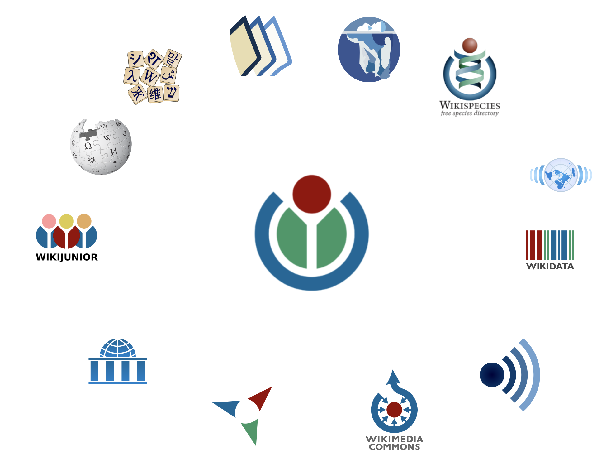

A Conversational Agent to Support Citizen Interactions powered by Semantic AI
by Dennis Diefenbach
27.01.2020
@AMLD (Lausanne)
Outline
Constructing a Knowledge Graph about the European Union
The Knwoledge Graph is hosted using a new Wikimedia Project: Wikidata

Available at https://linkedopendata.eu/
Current content
European institutions
European countries
Capitals
DGs
Projects financed by the European Union
Some Features
Multilingual
Can be queried
Available at http://query.linkedopendata.eu/
Can be edited by humans and by bots
Scales
Wikibase hosts Wikidata, one of the largest existing KGs containing 5 Billion triples.
Provenance
QAnswer: Answering Questions on top of the Knowledge Graph
Intent Detection vs Semantic Parsing
Intent Detection
Question:
I have a problem, my flight was delayed!
Intents:
- Flight delayed
- Flight cancelled
- Flight overbooked
- Luggage lost.
Semantic Parsing
Question:
What are projects by DG Regio in Denmark?
Formal representation:
PREFIX lode: <https://linkedopendata.eu/entity/>
PREFIX lodp: <https://linkedopendata.eu/props/direct/>
SELECT ?s where {
?s lodp:P35 lode:Q9934 .
?s lodp:P32 lode:Q12 .
}
Asking question on the Knowledge Graph ...
Explainability
Integration in a Conversational Agent
Conclusion
We have shown how:
- data about the European Union can be aggregated in a Knwoledge Graph
- this data can be made accessible via natural language
- the data can be accessed via a Conversational Agent.
Acknowledgmentes:
- Doris Team @ CNECT
- Max De Wilde
- Raphael Hubain
Thank you! Questions?